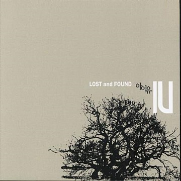
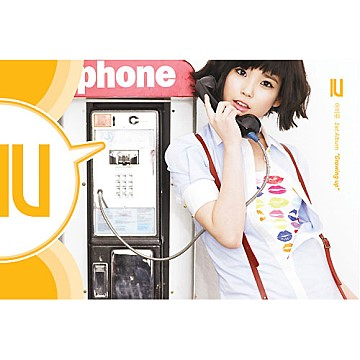
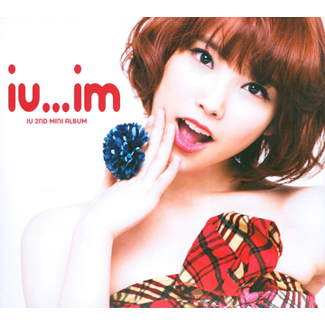
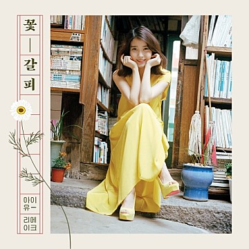
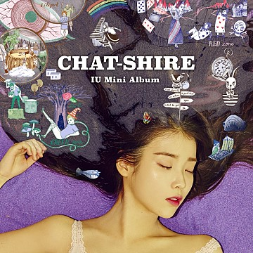
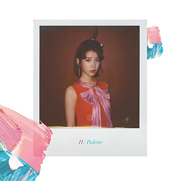
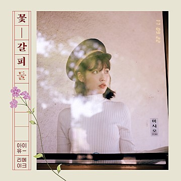

아이유에 대한 정보 알아가기입니다
미니1집2008.09.23타이틀 곡 / 미아수록곡미운오리있잖아 ( Feat.마리오 )Feel So GoodEvery Sweet Day미아 (Inst.) |
정규1집2009.04.23타이틀 곡 / Boo수록곡바라보기가여워A DreamerEvery Sweet Day미아나 말고 넷있잖아 ( Feet. 마리오 )졸업하는 날Feel So Good미운오리마주보기 (바라보기 그 후)미아 (Acoustic Ver.)있잖아 (Rock Ver.)Boo (Inst.)가여워 (Inst.) |
미니2집2009.11.12타이틀 곡 / 마쉬멜로우수록곡Love attack기차를 타고아침 눈물두근 두근 데이트기차를 타고 (Inst.)아침 눈물 (Inst.) |
||
미니2집2009.11.12타이틀 곡 / 마쉬멜로우수록곡Love attack기차를 타고아침 눈물두근 두근 데이트기차를 타고 (Inst.)아침 눈물 (Inst.) |
미니3집2010.12.09타이틀 곡 / 좋은 날수록곡이게 아닌데느리게 하는 일첫 이별 그날 밤혼자 있는 방미리 메리 크리스마스 (Feat.천둥 of MBLAQ)좋은 날 (Inst.) |
미니3집 플러스2011.02.17타이틀 곡 / 나만 몰랐던 이야기수록곡잔혹동화나만 몰랐던 이야기 (With Pianist 김광민) |
||
정규2집2011.11.29타이틀 곡 / 너랑 나수록곡비밀잠자는 숲 속의 왕자(Feat.윤상)별을 찾는 아이(Feat.김광진)벽지무늬삼촌(Feat.이적)사랑니Everything's Alright(Feet.김현철)Last FantasyTeacher (Feat. Ra.D)길 잃은 강아지4AM라망 (L'amant) |
정규3집2013.10.08타이틀 곡 / 분홍신수록곡을의 연애(With 박주원)누구나 비밀은 있다(Feat.가인 of Brown Eyesed Girls)입술 사이(50cm)Modern Times싫은 날Obliviate아이야 나랑 걷자(Feet.최백호)Havana우울시계(Feat.종현 of SHINEE)한낮의 꿈(Feat.양희은)기다려(Bonus Track)Voice Mail(Korean Ver.) |
정규3집 리패키지2013.12.20타이틀 곡 / 금요일에 만나요(Feat.장이정)수록곡크레파스(드라마'예쁜 남자'삽입곡)을의 연애(With 박주원)누구나 비밀은 있다(Feat.가인 of Brown Eyesed Girls)입술 사이(50cm)Modern Times싫은 날Obliviate아이야 나랑 걷자(Feet.최백호)Havana우울시계(Feat.종현 of SHINEE)한낮의 꿈(Feat.양희은)기다려(Bonus Track)Voice Mail(Korean Ver.) |
||
리메이크 앨범2014.05.16타이틀 곡 / 나의 옛날이야기수록곡꽃삐에로는 우릴 보고 웃지사랑이 지나가면너의 의미(Feat. 김창완)여름밤의 꿈꿍따리 샤바라(Feat.클론) |
미니4집2015.10.23타이틀 곡 / 스물셋수록곡새 신발Zeze푸르던Red Queen(Feat.Zion.T)무릎안경 |
정규4집2017.04.21타이틀 곡 / 팔레트 (Feat.G-DRAGON)수록곡이 지금이런 엔딩사랑이 잘 (With 오혁)잼잼Black Out마침표밤편지그렇게 사랑은이름에게 |
||
두번째 리메이크 앨범2017.09.22타이틀 곡 / 잠 못 드는 밤 비는 내리고수록곡가을 아침비밀의 화원어젯밤 이야기개여울매일 그대와 |